%matplotlib inline
import torch
import torch.nn as nn
from torch.nn import functional as F
from torch import optim
import numpy as np
from matplotlib import pyplot as plt
import matplotlib.animation
import math, random
torch.__version__
'1.3.0'
3.1.23. 3.3 通过Sin预测Cos
在介绍循环神经网络时候我们说过，循环神经网络由于其的特殊结构，十分十分擅长处理时间相关的数据，下面我们就来通过输入sin函数，输出cos函数来实际使用。 首先，我们还是定义一些超参数
TIME_STEP = 10 # rnn 时序步长数
INPUT_SIZE = 1 # rnn 的输入维度
DEVICE = torch.device("cuda" if torch.cuda.is_available() else "cpu")
H_SIZE = 64 # of rnn 隐藏单元个数
EPOCHS=300 # 总共训练次数
h_state = None # 隐藏层状态
由于是使用sin和cos函数，所以这里不需要dataloader，我们直接使用Numpy生成数据，Pytorch没有π这个常量，所以所有操作都是用Numpy完成
steps = np.linspace(0, np.pi*2, 256, dtype=np.float32)
x_np = np.sin(steps)
y_np = np.cos(steps)
生成完后，我们可视化一下数据
plt.figure(1)
plt.suptitle('Sin and Cos',fontsize='18')
plt.plot(steps, y_np, 'r-', label='target (cos)')
plt.plot(steps, x_np, 'b-', label='input (sin)')
plt.legend(loc='best')
plt.show()
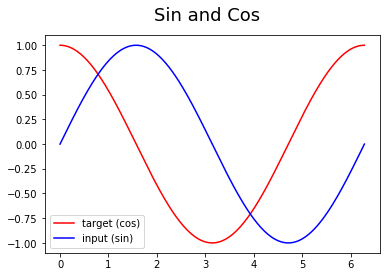
下面定义一下我们的网络结构
class RNN(nn.Module):
def __init__(self):
super(RNN, self).__init__()
self.rnn = nn.RNN(
input_size=INPUT_SIZE,
hidden_size=H_SIZE,
num_layers=1,
batch_first=True,
)
self.out = nn.Linear(H_SIZE, 1)
def forward(self, x, h_state):
# x (batch, time_step, input_size)
# h_state (n_layers, batch, hidden_size)
# r_out (batch, time_step, hidden_size)
r_out, h_state = self.rnn(x, h_state)
outs = [] # 保存所有的预测值
for time_step in range(r_out.size(1)): # 计算每一步长的预测值
outs.append(self.out(r_out[:, time_step, :]))
return torch.stack(outs, dim=1), h_state
# 也可使用以下这样的返回值
# r_out = r_out.view(-1, 32)
# outs = self.out(r_out)
# return outs, h_state
下面我们定义我们的网络
rnn = RNN().to(DEVICE)
optimizer = torch.optim.Adam(rnn.parameters()) # Adam优化，几乎不用调参
criterion = nn.MSELoss() # 因为最终的结果是一个数值，所以损失函数用均方误差
由于没有测试集，所以我们训练和测试写在一起了
rnn.train()
plt.figure(2)
for step in range(EPOCHS):
start, end = step * np.pi, (step+1)*np.pi # 一个时间周期
steps = np.linspace(start, end, TIME_STEP, dtype=np.float32)
x_np = np.sin(steps)
y_np = np.cos(steps)
x = torch.from_numpy(x_np[np.newaxis, :, np.newaxis]) # shape (batch, time_step, input_size)
y = torch.from_numpy(y_np[np.newaxis, :, np.newaxis])
x=x.to(DEVICE)
prediction, h_state = rnn(x, h_state) # rnn output
# 这一步非常重要
h_state = h_state.data # 重置隐藏层的状态, 切断和前一次迭代的链接
loss = criterion(prediction.cpu(), y)
# 这三行写在一起就可以
optimizer.zero_grad()
loss.backward()
optimizer.step()
if (step+1)%20==0: #每训练20个批次可视化一下效果，并打印一下loss
print("EPOCHS: {},Loss:{:4f}".format(step,loss))
plt.plot(steps, y_np.flatten(), 'r-')
plt.plot(steps, prediction.cpu().data.numpy().flatten(), 'b-')
plt.draw()
plt.pause(0.01)
EPOCHS: 19,Loss:0.139491
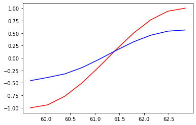
EPOCHS: 39,Loss:0.007957
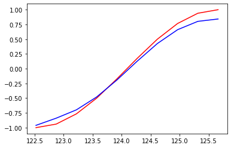
EPOCHS: 59,Loss:0.025667
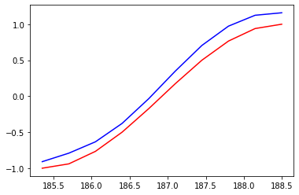
EPOCHS: 79,Loss:0.004511
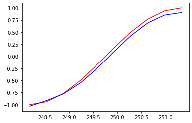
EPOCHS: 99,Loss:0.012425
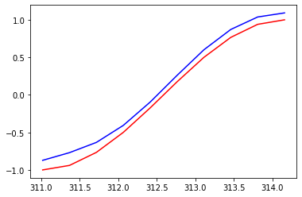
EPOCHS: 119,Loss:0.006166
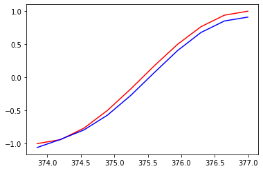
EPOCHS: 139,Loss:0.017573
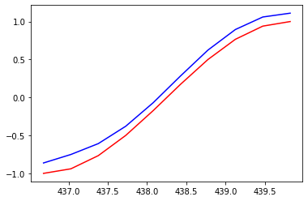
EPOCHS: 159,Loss:0.005687
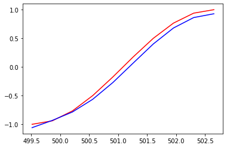
EPOCHS: 179,Loss:0.008566
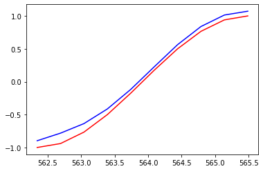
EPOCHS: 199,Loss:0.000836
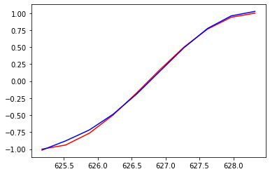
EPOCHS: 219,Loss:0.003727
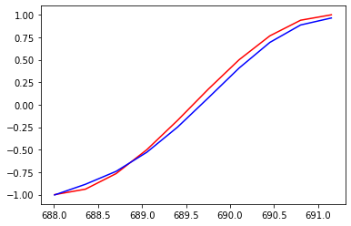
EPOCHS: 239,Loss:0.005441
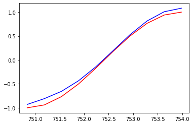
EPOCHS: 259,Loss:0.005437
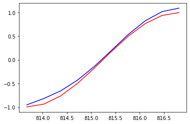
EPOCHS: 279,Loss:0.004994
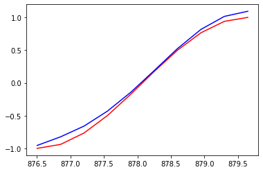
EPOCHS: 299,Loss:0.004386
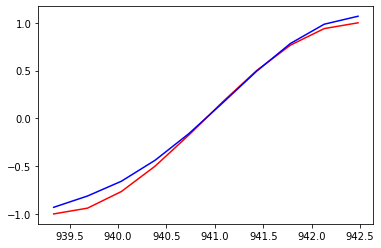
蓝色是模型预测的结果，红色是函数的结果，通过300次的训练，已经基本拟合了